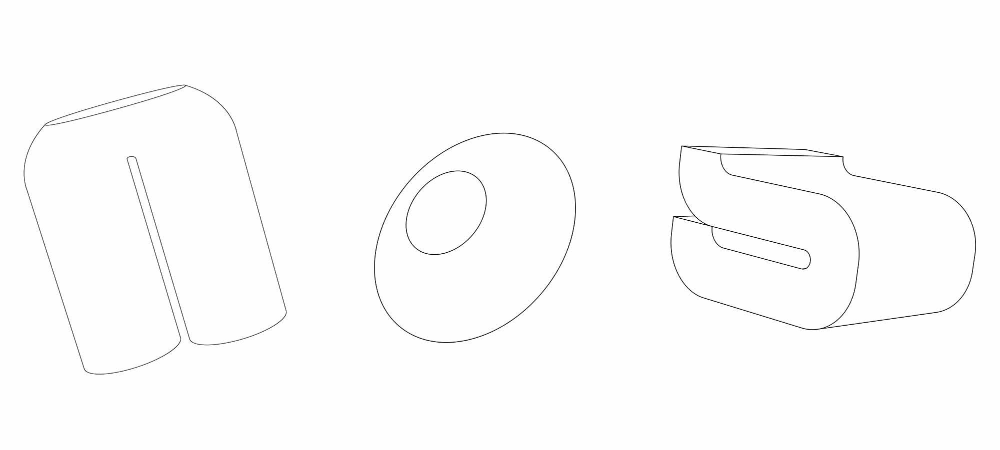
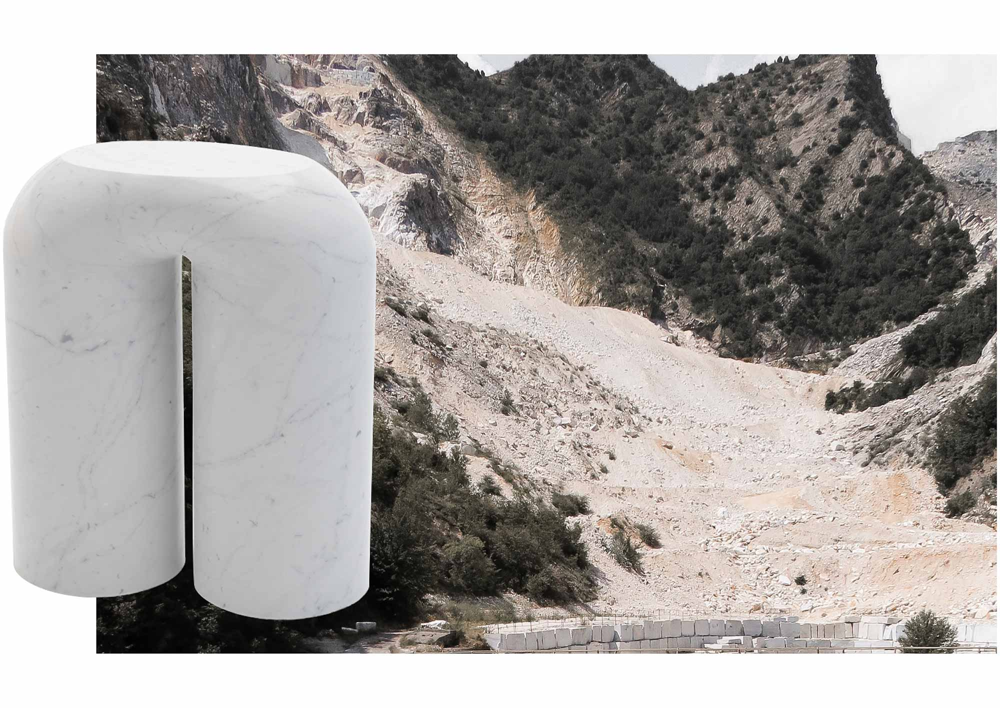
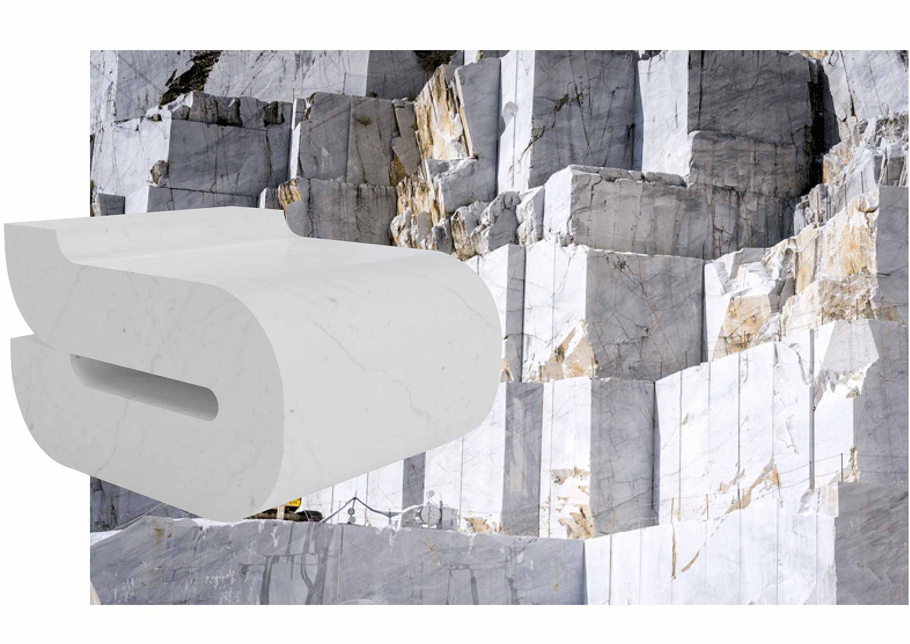

This series addresses the question of sustainability through notions of permanence, with a focus on material: Carrara marble. There is necessarily a tension between resource extraction and the creation of something which is “of the earth” and will never decay. Each object in the family is loosely inspired by the body, ensuring proximity between the object and its user, and creating a sense of timelessness.
Side Table
Cone Bowl

Chair
